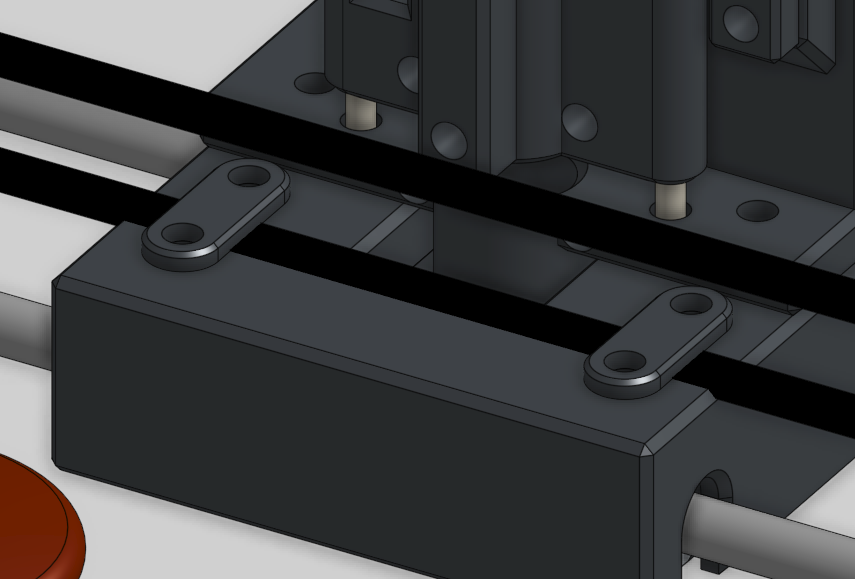

L'Axe X (Le Pont Transversal)
L'axe X est l'élément mobile le plus sollicité de la machine. Il supporte la tête d'impression et doit garantir un déplacement parfaitement rectiligne sur toute la largeur de la zone de dessin.
1. Motorisation et Rigidité
Le mouvement est assuré par un moteur NEMA 17 monté en extrémité gauche. Malgré le poids déporté du moteur, la structure reste stable :
- Résistance à la flexion : Les deux axes en aluminium supportent sans difficulté le poids du moteur ainsi que la traction exercée par la courroie. Aucun fléchissement n'est observé, garantissant que le stylo reste toujours à la même hauteur par rapport au plateau.
- Transmission : Une poulie crantée GT2 (fait maison) montée sur l'arbre du moteur entraîne la courroie qui parcourt toute la longueur du pont.
2. L'importance de la tension (Le phénomène des "cercles ovales")
Une courroie détendue est le pire ennemi d'un traceur vectoriel car elle crée un jeu mécanique (aussi appelé backlash) :
- Explication du défaut : Lorsqu'une courroie a du "mou" et que le moteur change de direction (ce qui arrive tres souvent), le moteur va tourner dans le vide sur quelques millimètres pour retendre la courroie avant que la tête de dessin ne commence réellement à bouger. Ce petit retard de mouvement déforme systématiquement le tracé, transformant un cercle parfait en une forme ovale imparfaite par exemple.
- Le réglage : Pour pallier cela, le bloc situé à l'extrémité droite du pont intègre un mécanisme de tension efficace. En vissant deux vis M3, on écarte la poulie folle vers l'extérieur, ce qui permet de tendre la courroie GT2 avec une grande finesse.
🛑 Sécurité : Capteur de fin de course (Endstop)
Sur le support moteur, on distingue un circuit imprimé rouge. Il s'agit du capteur de fin de course de l'axe X. Il permet à la machine de détecter sa position limite à gauche lors de la phase de "Homing". Dès que le chariot de la tête vient percuter ce contacteur, l'ESP32 initialise l'origine X=0.
Sur le support moteur, on distingue un circuit imprimé rouge. Il s'agit du capteur de fin de course de l'axe X. Il permet à la machine de détecter sa position limite à gauche lors de la phase de "Homing". Dès que le chariot de la tête vient percuter ce contacteur, l'ESP32 initialise l'origine X=0.
3. Entraînement de la Tête et Démontabilité
La liaison entre la courroie et l'effecteur est un point critique de la conception :
- Fixation par pincement : Pour éviter toute pièce métallique supplémentaire ou système de fixation complexe qui alourdirait l'axe, la courroie est directement pincée par la tête d'impression. Le design du chariot Z intègre des fentes spécifiques qui verrouillent les crans de la courroie GT2, assurant une transmission du mouvement sans aucun glissement, même lors des accélérations brusques.
- Stockage et Démontage : Ce système d'encoche présente un avantage majeur : la courroie est extrêmement facile à démonter et à remonter sans aucun outil. C'est une fonctionnalité très pratique pour relâcher instantanément la tension lorsque la machine est entreposée pendant une longue période, évitant ainsi d'étirer le caoutchouc de manière permanente.
